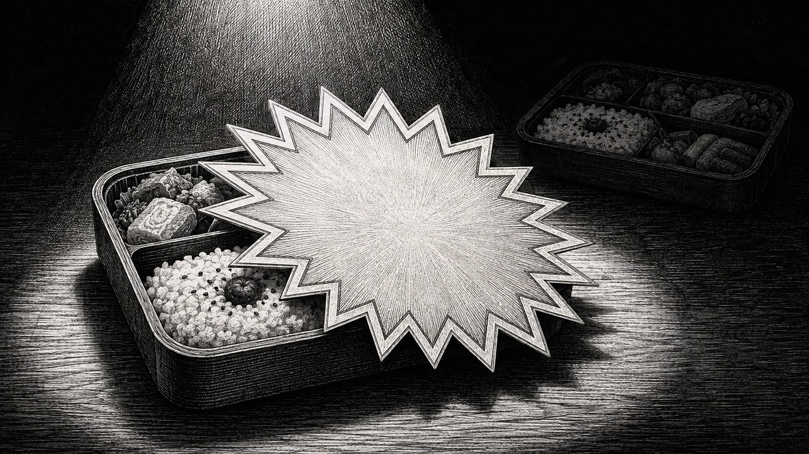
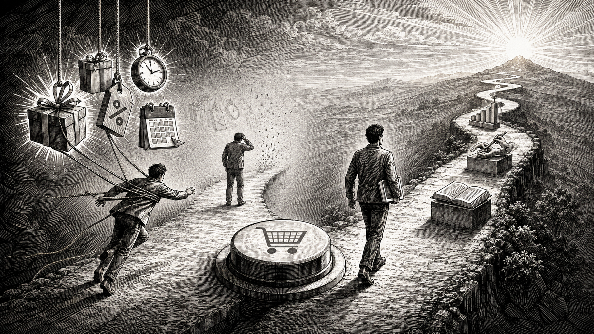

特典を増やすほど、商品が見えなくなっていませんか？

どーも、とーるです。スーパーに行ったら、普段あまり買わないお弁当に、「半額」のシールが貼ってあった。一瞬止まりますよね。
「……半額か。」そして買う。家に帰って食べる。まあ普通。
別にまずくもない。でも、定価だったら買ってない。
これ、お弁当が欲しかったのか。
半額が欲しかったのか。ちょっと分からないんですよね（笑）SNSの商品販売でも、似たことが起きているなと思います。
特典、何個ついてるん。
最近の商品案内を見ていると、本体より特典の紹介の方が長いものがあります。講座本編。＋テンプレート＋チェックリスト＋プロンプト100選＋限定動画＋個別相談＋PDF＋過去セミナーさらに、本日限定で追加特典！
もう、福袋なんよ（笑）もちろん、特典をつけること自体は悪くありません。
僕もつけます。本編を使いやすくする資料。
受講後につまずきやすい部分を補う動画。
実践を早めるテンプレート。
こういうものなら、普通に価値があります。
ただ、僕が気になるのは、
人が動く理由には、外から来るものと中から来るものがある
心理学では、動機を考えるときに、外発的動機と、内発的動機という考え方があります。すごく簡単にすると、外発的動機は、何か外側の理由があって動くこと。
報酬がもらえる。怒られたくない。期限がある。特典がもらえる。
安くなる。こういうものです。
一方、内発的動機は、その行為そのものへの興味や楽しさから動くこと。
「これを知りたい」「これをやってみたい」「もっと上手くなりたい」みたいなものですね。
※厳密には動機はこんなに二択でキレイに分かれるものじゃありませんが、今回は分かりやすくこの二つで考えます。
「今日まで50％OFF」は、めちゃくちゃ動く
例えば、あなたがある講座を見つけた。内容を見る。「ちょっと気になるな」くらい。そこに、通常29,800円 → 本日限定9,800円と書いてある。
さらに、今日申し込めば特典7個。どうでしょう。急に欲しくなりますよね。でも、ここで一回考えてみてください。あなたが欲しくなったのは、講座でしょうか。
それとも、
もちろん、両方の場合もあります。ただ、割引。期限。特典。
残席。
これを強くすればするほど、「このサービスを受けたい」以外の理由でも、人を動かせるようになります。
これが悪いという話じゃありません。
マーケティングなので、背中を押す仕組みはあっていい。ただ、背中を押しすぎて、本人より先に購入ボタンまで連れていかない方がいいと思っています（笑）
外側の理由だけで入ると、受け入れ方も変わる
例えば、Aさんが講座へ入りました。
理由は、「このテーマを勉強したかった」「自分の事業に必要だと思った」「この人の考え方をもっと学びたい」だった。
もう一人、Bさんが入りました。
理由は、「今日まで半額だった」「特典が10個もついていた」「今買わないと損だと思った」だった。
同じ商品を受け取ります。でも、ちょっと受け取り方が違いそうじゃないですか。
Aさんは、そもそも中身を欲しがっています。
多少、「ここは思ってたのと違ったな」があっても、自分の目的があります。
「じゃあここを使おう」「これは自分には必要ないな」と取捨選択もしやすい。
でもBさんは、外側の理由に強く押されて入っています。
そこで中身まで、「思ったより普通だな」となったら、何が残るでしょう。
半額だった。特典があった。今日までだった。でも、買ったあとは、もう関係ありません。
入会前は「特典10個！」、入会後は普通の講座
これ、結構怖いと思うんです。
販売ページでは、「総額○万円相当！」「限定特典10個！」
「本日23:59まで！」
「通常価格から70％OFF！」と、ドーパミン大運動会みたいになっている。
そして入ってみたら、普通の動画講座。
……急に静か（笑）別に動画講座が悪いわけじゃないんです。
本来、それを学びたくて買っていれば何も問題ありません。
でも、購入時の感情が、「うわ、今買わないと損！」
だった人からすると、販売時の熱量と、受講時の日常の差が大きい。
すると、「思ったより……」が生まれやすくなります。
商品に満足できなかったとき、反発も大きくなりやすい
だから僕は、特典や割引を強く使う商品ほど、
だって、かなり強く背中を押したわけですから。
「今しかない」「絶対お得」「この機会を逃したら」と動かして、実際に入ったら、「あれ？」となれば、そりゃ反発も起きます。
本人からすると、自分でゆっくり選んだというより、「買わされた感」が残りやすい。
もちろん、最終的に購入ボタンを押したのは本人です。
でも、人間の感じ方として、「自分でこれを選びたかった」と、「今買わないと損だと思って買った」は結構違います。
これ、継続サービスだともっと大事です
単発の商品なら、一回見て終わるものもあります。でも、スクール。
コミュニティ。コンサル。サブスク。こういうサービスは、
動画を見る。実践する。質問する。投稿する。商品を作る。改善する。
こちらが代わりに全部やるわけじゃありません。だから、「特典が欲しくて入りました」「安かったから入りました」だけだと、入会後に動く理由が弱くなることがあります。
特典はもうもらった。割引も終わった。
入会というゴールは達成した。
そこで、外側から引っ張っていたものがなくなる。すると、止まる。
あるあるじゃないでしょうか。教材だけ増えて、アプリの中に、“いつか見る講座コレクション”が増えていく（笑）
本当は「入りたい人」が入るのが一番いい
だから僕は、サービス販売って、無理やり購入率を100％に近づける必要なんてないと思っています。
この内容を学びたい。
この問題を解決したい。
この人から学びたい。
今の自分に必要だと思う。その気持ちがある。
そこに最後、「今なら少しお得ですよ」「この特典も使えますよ」くらいで背中を押す。
僕はこの順番が好きです。
割引が理由じゃなく、買う理由はすでに本人の中にある。
特典やキャンペーンは、その最後の一歩を軽くするもの。このくらい。
特典は「豪華さ」より「本編を使えるようにするもの」
なので、僕が特典を考えるなら、数を増やすより、
例えば、講座を見ても、「で、私は何すればいいの？」となりそうなら、ワークシートをつける。
実践時に迷いそうなら、チェックリストをつける。
一人では止まりそうなら、質問できる場をつける。
完成形が分からないなら、サンプルをつける。
こういう特典なら、本編の価値を上げます。
でも、関係ないPDFを20個つけて、「20大特典！！」にしても、そのうち18個たぶん開かれません（笑）それなら、本当に使う2個の方がいい。
値引きも「理由」がある方がいい
割引も同じです。何となく、毎月、「今だけ！」をやっていたら、もう今だけじゃないんですよ（笑）発売記念。
先行販売。モニター。
既存顧客向け。メール読者限定。理由があるから安い。これは分かります。でも、ずっと50％OFF。
毎回最終日。毎月ラストチャンス。
になると、商品価値より、「どうせまた安くなる」を学習されます。そして、定価で買う理由がなくなる。
人を動かすことと、動き続けてもらうことは違う
ここが、今回一番言いたいところです。特典。値引き。期限。これらは、

でも、購入後もその人が動き続けるかは、また別の話です。
買うところまでは、外から押せる。でも、学ぶ。実践する。続ける。
改善する。ここまで全部、毎回特典で釣るわけにはいきません。
「今日投稿したらAmazonギフト券500円！」とか毎日やるんですかね（笑）だから、最終的には、本人の中に、「これをやりたい」「ここまで行きたい」「この問題を変えたい」が必要になります。
「欲しい」を作るんじゃなく、「欲しい人」が分かる設計にする
僕は、マーケティングって、欲しくない人を、テクニックで欲しくさせることじゃないと思っています。
むしろ、その人が抱えている問題に気づいてもらう。
解決策を知ってもらう。
自分に必要か考えてもらう。そして、「これならやりたい」と思った人に、サービスを案内する。
その方が、購入後のズレも少ない。
販売するときだけ盛り上がって、入った瞬間に温度がゼロになる、みたいなことも減ります。だから、商品を作るとき。
特典を10個考える前に、一度見てみてください。
割引を消しても、期間限定を消しても、残席表示を消しても、「それでも受けたい」と思える理由があるでしょうか。
そこがあるなら、特典はちゃんと「特典」になります。でも、それを全部取った瞬間、何も魅力が残らないなら、もしかすると、豪華にする場所を間違えています。
お弁当が美味しいから買う。
そこにたまたま半額シールが貼ってあった。これなら最高です。
こっちに寄りすぎないようにする。
サービス販売も、そのくらいでいいんじゃないかなと思っています。
✦
あわせて読みたいコラム
- #コラム88：「フロント＝安売り」の勘違いが、あなたのビジネスを終わらす。
- #コラム77：「お客様の声が集まりました！」は、値上げのサインではない
- #コラム56：「限定」という言葉の時間スイッチ
- #コラム59：あなたの商品名の賞味期限
- #コラム106：「高額商品が売れて初めて0→1」って、誰が決めたんだろう。
とーる｜猫好きの行動経済アナリスト